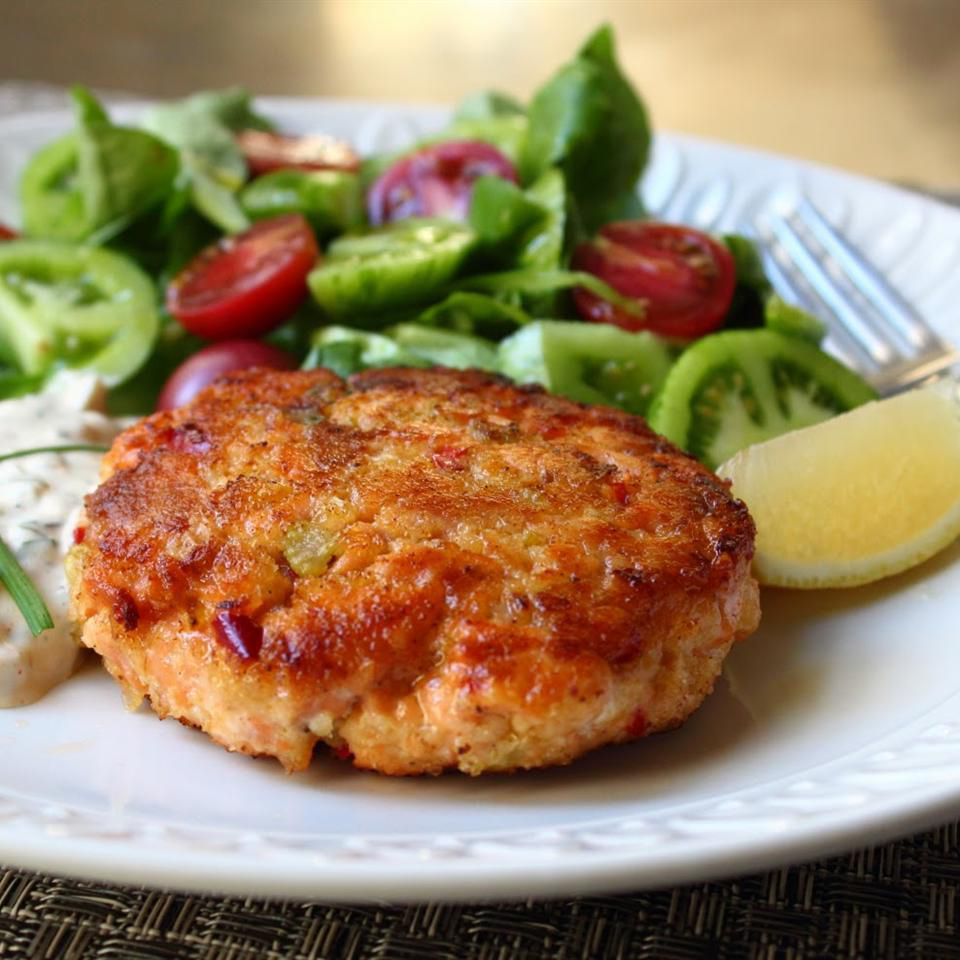

Salmon Cake
Description
Salmon cakes are one of my go-to emergency meals. Every once in a while I like
to use fresh salmon.
Ingredients
- 1 tablespoon extra-virgin olive oil
- ¼ cup minced onion
- 2 tablespoons minced red bell pepper
- 2 tablespoons minced celery
- Salt and pepper to taste
- 1 tablespoon capers
- 1 ¼ pounds fresh wild salmon, coarsely chopped
- ¼ cup mayonnaise
- ¼ cup panko bread crumbs
- 2 cloves garlic, minced
- 1 teaspoon Dijon mustard
- 1 pinch cayenne pepper
- 1 pinch seafood seasoning (such as Old Bay®)
- 1 tablespoon panko bread crumbs, or to taste
- 2 tablespoons olive oil, or as needed
- Heat olive oil in a skillet over medium heat.
- Cook and stir onion, red pepper, celery, and a pinch of salt until onion is soft, about 5 minutes.
- Add capers; cook until fragrant, about 2 minutes.
- Remove from heat and cool to room temperature.
- Mix salmon, onion mixture, mayonnaise, bread crumbs, garlic, mustard, cayenne, seafood seasoning, salt, and pepper.
- Cover and refrigerate for 1 to 2 hours until firmed and chilled.
- Form the mixture into four 1-inch thick patties.
- Sprinkle the remaining panko bread crumbs over each patty.
- Cook patties in hot olive oil until golden, about 3 to 4 minutes per side.
Home